26. Offline Mode¶
In offline mode (uncoupled to an atmospheric model), the atmospheric
forcing required by CLM (Table 2.3) is supplied by observed datasets.
The standard forcing provided with the model is a 110-year (1901-2010)
dataset (CRUNCEP; Viovy 2011) that is a combination of two existing
datasets; the CRU TS3.2 0.5 X 0.5
monthly data covering the period 1901 to 2002 (Mitchell and Jones 2005)
and the NCEP reanalysis 2.5 X 2.5
6-hourly data covering the period 1948 to 2010. The CRUNCEP dataset has
been used to force CLM for studies of vegetation growth,
evapotranspiration, and gross primary production (Mao et al. 2012, Mao
et al. 2013, Shi et al. 2013) and for the TRENDY (trends in net
land-atmosphere carbon exchange over the period 1980-2010) project (Piao
et al. 2012). Version 4 is used here (Viovy 2011). Alternative forcing
datasets can also be used (e.g., the Qian et al. (2006) dataset used for
previous versions of CLM is still available).
X 0.5
monthly data covering the period 1901 to 2002 (Mitchell and Jones 2005)
and the NCEP reanalysis 2.5 X 2.5
6-hourly data covering the period 1948 to 2010. The CRUNCEP dataset has
been used to force CLM for studies of vegetation growth,
evapotranspiration, and gross primary production (Mao et al. 2012, Mao
et al. 2013, Shi et al. 2013) and for the TRENDY (trends in net
land-atmosphere carbon exchange over the period 1980-2010) project (Piao
et al. 2012). Version 4 is used here (Viovy 2011). Alternative forcing
datasets can also be used (e.g., the Qian et al. (2006) dataset used for
previous versions of CLM is still available).
Here, the CRUNCEP dataset, which does not include data over oceans,
lakes, and Antarctica is modified. This missing data is filled with Qian
et al. (2006) data from 1948 that is interpolated by the data atmosphere
model to the 0.5 CRUNCEP grid. This allows the model
to be run over Antarctica and ensures data is available along coastlines
regardless of model resolution.
The forcing data is ingested into a data atmosphere model in three
“streams”; precipitation ( ) (mm s-1), solar
radiation (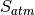 ) (W m-2), and four other
fields [atmospheric pressure 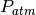 (Pa), atmospheric specific
humidity
) (mm s-1), solar
radiation (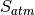 ) (W m-2), and four other
fields [atmospheric pressure 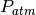 (Pa), atmospheric specific
humidity  (kg kg-1), atmospheric
temperature
(kg kg-1), atmospheric
temperature  (K), and atmospheric wind 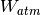
(m s-1)]. These are separate streams because they are
handled differently according to the type of field. In the CRUNCEP
dataset, the precipitation stream is provided at six hour intervals and
the data atmosphere model prescribes the same precipitation rate for
each model time step within the six hour period. The four fields that
are grouped together in another stream (pressure, humidity, temperature,
and wind) are provided at six hour intervals and the data atmosphere
model linearly interpolates these fields to the time step of the model.
(K), and atmospheric wind 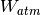
(m s-1)]. These are separate streams because they are
handled differently according to the type of field. In the CRUNCEP
dataset, the precipitation stream is provided at six hour intervals and
the data atmosphere model prescribes the same precipitation rate for
each model time step within the six hour period. The four fields that
are grouped together in another stream (pressure, humidity, temperature,
and wind) are provided at six hour intervals and the data atmosphere
model linearly interpolates these fields to the time step of the model.
The total solar radiation is also provided at six hour intervals. The
data is fit to the model time step using a diurnal function that depends
on the cosine of the solar zenith angle  to provide a
smoother diurnal cycle of solar radiation and to ensure that all of the
solar radiation supplied by the six-hourly forcing data is actually
used. The solar radiation at model time step 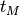 is
to provide a
smoother diurnal cycle of solar radiation and to ensure that all of the
solar radiation supplied by the six-hourly forcing data is actually
used. The solar radiation at model time step 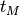 is
(1)¶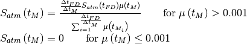
where is the time step of the forcing data (6
hours  3600 seconds hour-1 = 21600
seconds), 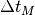 is the model time step (seconds),
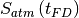 is the six-hourly solar radiation
from the forcing data (W m-2), and
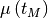 is the cosine of the solar zenith angle
at model time step (section 3.3). The term in the
denominator of equation is the sum of the cosine of the solar zenith
angle for each model time step falling within the six hour period. For
numerical purposes, 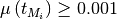.
3600 seconds hour-1 = 21600
seconds), 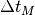 is the model time step (seconds),
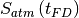 is the six-hourly solar radiation
from the forcing data (W m-2), and
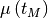 is the cosine of the solar zenith angle
at model time step (section 3.3). The term in the
denominator of equation is the sum of the cosine of the solar zenith
angle for each model time step falling within the six hour period. For
numerical purposes, 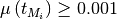.
The total incident solar radiation at the model time step is then split into near-infrared and visible radiation and partitioned into direct and diffuse according to factors derived from one year’s worth of hourly CAM output from CAM version cam3_5_55 as
(2)¶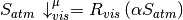
(3)¶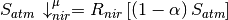
(4)¶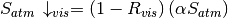
(5)¶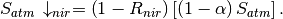
where  , the ratio of visible to total incident solar
radiation, is assumed to be
, the ratio of visible to total incident solar
radiation, is assumed to be
(6)¶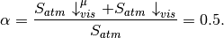
The ratio of direct to total incident radiation in the visible 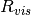 is
(7)¶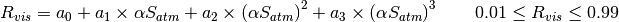
and in the near-infrared 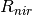 is
(8)¶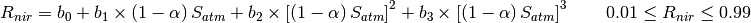
where 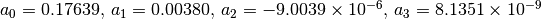 and 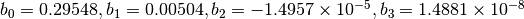 are coefficients from polynomial fits to the placeCAM data.
The additional atmospheric forcing variables required by Table 2.3 are
derived as follows. The atmospheric reference height 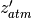
(m) is set to 30 m. The directional wind components are derived as
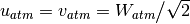 .
The potential temperature 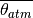 (K) is set
to the atmospheric temperature . The atmospheric
longwave radiation  (W m-2)
is derived from the atmospheric vapor pressure 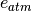 and
temperature (Idso 1981) as
(W m-2)
is derived from the atmospheric vapor pressure 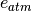 and
temperature (Idso 1981) as
(9)¶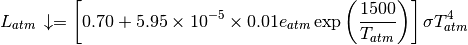
where
(10)¶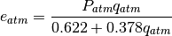
and  is the Stefan-Boltzmann constant (W
m-2 K
is the Stefan-Boltzmann constant (W
m-2 K ) (Table 2.6). The fraction of
precipitation (mm s-1) falling as rain and/or
snow is
) (Table 2.6). The fraction of
precipitation (mm s-1) falling as rain and/or
snow is
(11)¶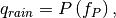
(12)¶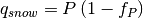
where
(13)¶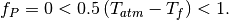
The aerosol deposition rates 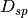 (14 rates as described in Table 2.3) are provided by a time-varying, globally-gridded aerosol deposition file developed by Lamarque et al. (2010).
If the user wishes to provide atmospheric forcing data from another
source, the data format outlined above will need to be followed with the
following exceptions. The data atmosphere model will accept a
user-supplied relative humidity 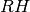 (%) and derive specific
humidity (kg kg-1) from
(14)¶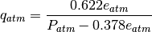
where the atmospheric vapor pressure (Pa) is derived
from the water (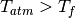 ) or ice
(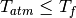 ) saturation vapor pressure
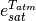 as
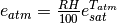 where  is the freezing temperature of water (K) (Table 2.6), and
is the pressure at height 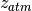 (Pa). The
data atmosphere model will also accept a user-supplied dew point
temperature 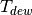 (K) and derive specific humidity
from
is the freezing temperature of water (K) (Table 2.6), and
is the pressure at height 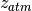 (Pa). The
data atmosphere model will also accept a user-supplied dew point
temperature 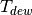 (K) and derive specific humidity
from
(15)¶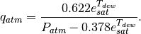
Here, 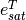 , the saturation vapor pressure as a function
of temperature, is derived from Lowe’s (1977) polynomials. If not
provided by the user, the atmospheric pressure (Pa) is
set equal to the standard atmospheric pressure 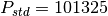
Pa, and surface pressure  (Pa) is set equal
to .
(Pa) is set equal
to .
The user may provide the total direct and diffuse solar radiation, 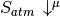 and 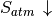 . These will be time-interpolated using the procedure described above and then each term equally apportioned into the visible and near-infrared wavebands (e.g., 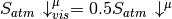 , 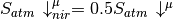 ).